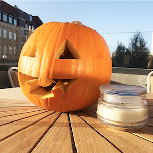
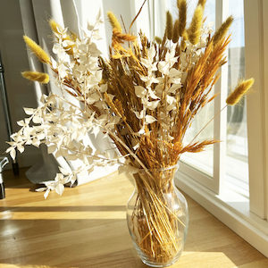
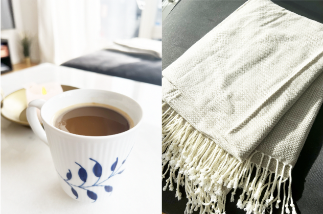

<!DOCTYPE html>
<html>
<head>
  <!-- SEO -->
    <meta charset="utf-8">
    <meta http-equiv="X-UA-Compatible" content="IE=edge">
    <meta name="viewport" content="width=device-width, initial-scale=1.0">
    <meta name="keywords" content="SIMPLY LIVING, indretning, inspiration">
    <meta name="describtion" content="Simply living er et online magasin med rig mulighed for inspiration til hjemmet">
    <meta name="author" content="Sofie Zizi">
    <title>SIMPLY LIVING</title>
    <link rel="stylesheet" href="style.css" />
<!-- ikon i faneblad / browser -->
	  <link rel="icon" type="image/x-icon" href="images/logo.png"/>

</head>

<body>
  <!--navigationsbar!-->
  <nav class="navbar">
    <div class="logo">
      <a href="/index.html"></a>
    </div>


    <ul>
      <li><a class="INDRETNING" href="indretning.html">INDRETNING</a></li>
      <li><a class="ARTIKLER" href="cozyoctober.html">ARTIKLER</a></li>
      <li><a class="OMOS" href="diy.html">OM OS</a></li>
      <li><a class="ABONNÈR" href="homeinspiration.html">ABONNÈR</a></li>
    </ul>
</nav>

<!--Artikel cozy october!-->
<main>
<h1>COZY OCTOBER</h1>

<div class="artikler">
  <div class="græskarimg">
    


<h3>Ønsker du en hyggelig oktobervibe i dit hjem?</h3>
<p>
Oktober er lig med efterår og tegn på bladene
falder af træerne, naturen går over i de koldere
farver og dit hjem skal emme af hygge i denne
efterårstid.
På denne årstid kommer halloween, som for
mange forbindes med uhygge. Græskarudskæring
giver anledning til en hyggelig eftermiddag med
venner eller familien. Skær et græskar som du
mener det skal se ud ”hyggeligt” eller ”uhyggeligt”
og put derefter stearinlys i. Græskaret kan herefter
placeres på en evt. altan og lyse op om aftenen.
</p>



<h3>Vil du rigtig gerne gøre mere ud af din indretning, men spare på pengene?</h3>

<p>
En blomsterbuket kan gøre meget for et rum. Ulempen er at de har en kort
holdbarhed og at de heller ikke ligefrem er billige. Et godt alternativ
er smukke evighedsbuketter. De giver en rigtig smuk udsmykning i hjemmet
samt de er holdbare lige indtil du ønsker at skifte dem ud. Det kan både
betale sig pengemæssigt men også hvis man ønsker blomster til de forskellige årstider.
</p>


<h3>Efterårsstemning</h3>
<p>
Gå en lang tur med en veninde i den friske
luft og tag derefter hjem og få varmen. En
god film, kaffe og et tæppe på. Så er den
hyggelige atmosfære af forskellige elementer
på plads.
</p>

  </div>

</div>

</main>


<!-- Footer -->
  <div id="footer">
      <p>FØLG</p>
      


    </div>

</body>
</html>
